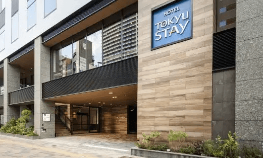
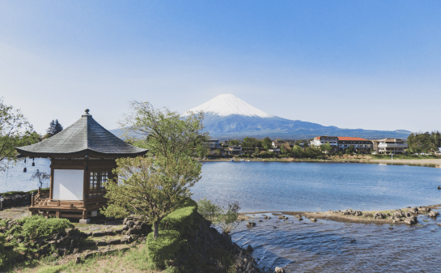
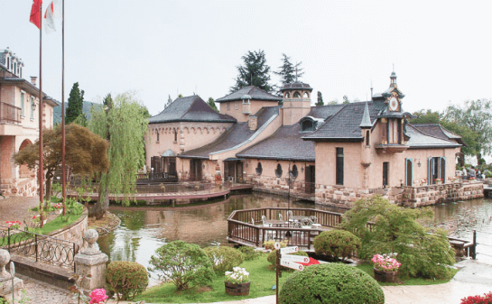
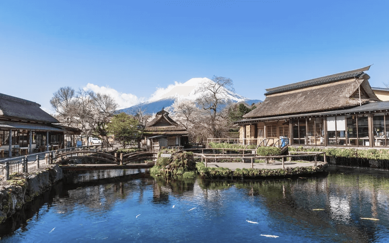
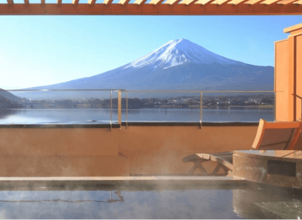
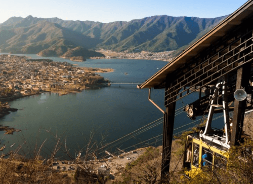
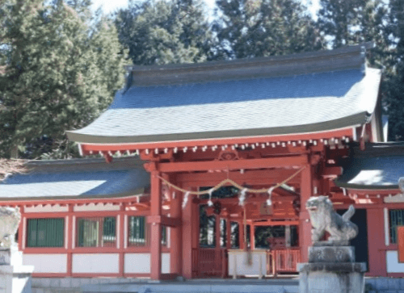

@@include('./layout/style.html') @@include('./layout/topBtn.html') @@include('./layout/header.html')
行程表




活動行程介紹
旅行注意事項
旅行費用:
每人NT$3500 兒童NT$2600
人數限制:
10人(最少6人)
截止日:
出發日前三天
飲食提供:
早餐x0 午餐x1 晚餐x0
建議服飾:
輕便衣著 可帶薄外套
其他推薦景點
四季の宿

充滿日式風情的裝潢，是當地相當知名 的傳統日式溫泉酒店。
天上山公園

搭上天上山公園Kachi纜車，以360度 全景欣賞富士山和河口湖全景。
淺間神社

擁有著古色古香的神社以及鳥居想要一 覽關東地區景緻的話非常推薦！
@@include('./layout/footer.html') @@include('./layout/js.html')